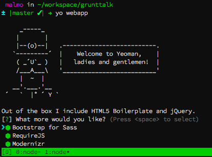

The Trio

Obligatory Picture of Javascript programmer by the golden gate
They're all based on node.js
npm seach generator
npm install generator-webapp
yo webapp
npm install && bower install
A Typical bower.json you might find in the wild:
Tasks can have targets:
grunt concatand it'll call all targets for this task, in sequence.
grunt concat:fooand it'll run that specific target.